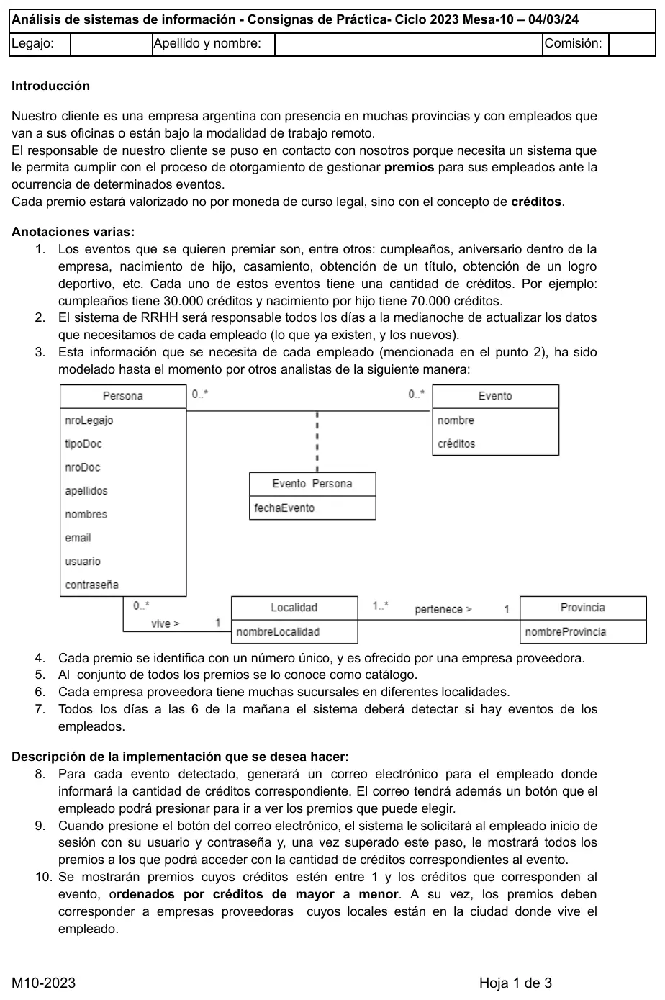
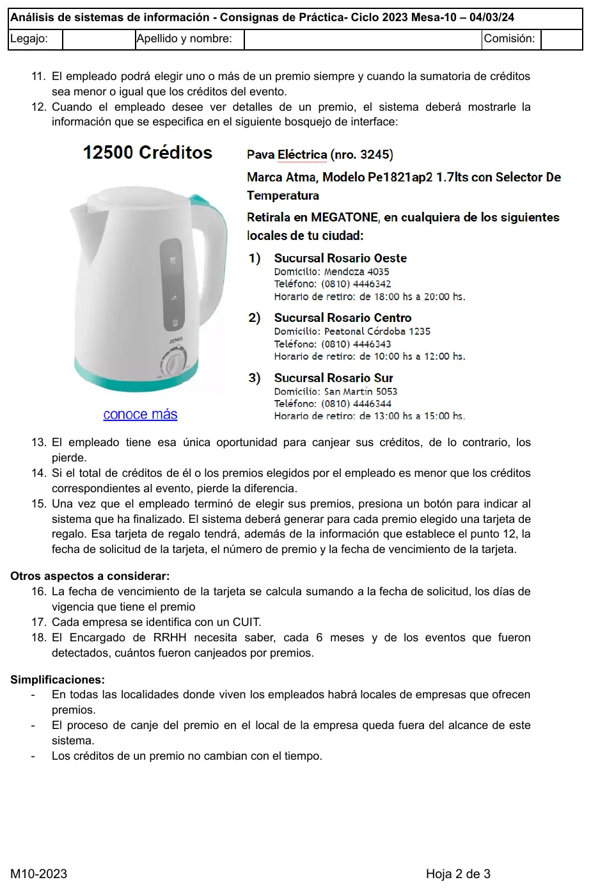
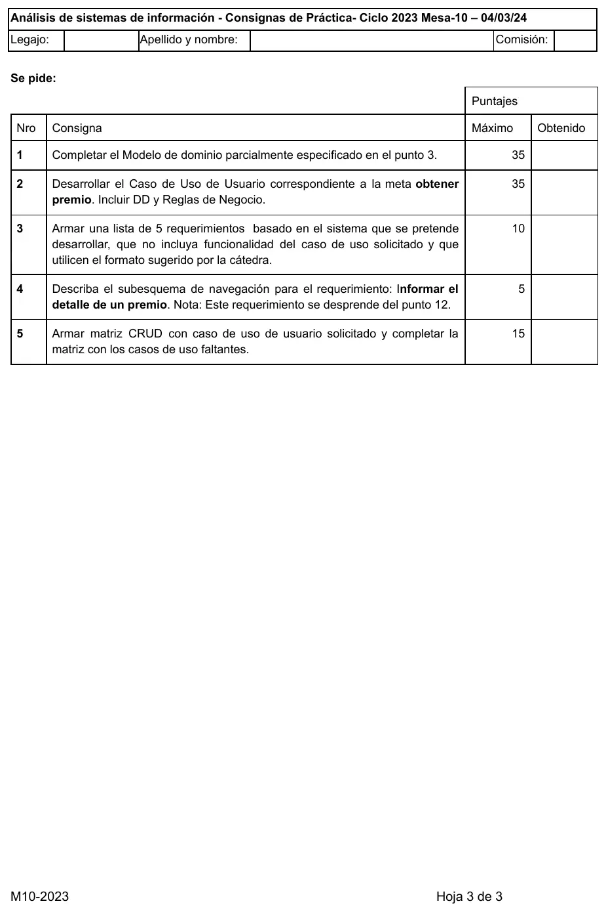

Final, 04/03/2024. Premios
Final, 04/03/2024
Enunciado






Propuesta de respuesta
Respuesta no verificada. La propuso Luta Studios con inteligencia artificial y ningún docente la revisó. Puede tener errores.
1. Modelo del dominio completo
Sobre lo que armaron los otros analistas se suman Premio, EmpresaProveedora, Sucursal y TarjetaRegalo. EventoPersona lleva {Bag}, porque una persona tiene el mismo evento más de una vez (el cumpleaños, por ejemplo), y fechaCanje para saber si ya usó su única oportunidad. El catálogo es el conjunto de todos los premios: va al glosario, no es una clase. Tocá el dibujo para verlo en pantalla completa.
/fechaVencimiento = fechaSolicitud + Premio.diasVigencia (punto 16). El número de premio de la tarjeta sale de su asociación con Premio.
2. Caso de uso de usuario, meta obtener premio
CUU01 Obtener premio
| Campo | Contenido |
|---|---|
| Dimensiones | Usuario, Sin estructurar, Sistema, Negra, Real, Semántica |
| Meta | Obtener premio |
| Actor primario | Empleado |
| Otros | <vacío> |
| Precondiciones de negocio | El empleado recibió el correo con los créditos del evento. |
| Precondiciones de sistema | Existen EventosPersona sin canjear. Existen Premios con su EmpresaProveedora y sus Sucursales. |
| Disparador | El empleado presiona el botón del correo para ver los premios que puede elegir. |
Camino básico
- Empleado ingresa usuario y contraseña. Sistema valida e informa los créditos del evento y los premios a los que puede acceder, ordenados por créditos de mayor a menor.
- Empleado selecciona un premio. Sistema valida que la suma de créditos de los premios elegidos no supere los del evento, agrega el premio a los elegidos e informa los créditos que le quedan.
- Empleado indica que terminó de elegir. Sistema registra el canje del evento, genera una tarjeta de regalo por cada premio elegido con su fecha de solicitud y su fecha de vencimiento, y las informa.
Caminos alternativos
1.a <durante>Usuario o contraseña inválidos:1.a.1Sistema informa la situación. Continúa en paso 1.
1.b <durante>El evento ya fue canjeado:1.b.1Sistema informa que ya usó la oportunidad de canje de ese evento. Fin CU.
2.a <previo>Empleado quiere ver el detalle de un premio:2.a.1Empleado selecciona el premio. Sistema informa el detalle del premio y los locales de su ciudad. Continúa en paso 2.
2.b <durante>La suma de créditos supera los del evento:2.b.1Sistema informa que no le alcanzan los créditos. Continúa en paso 2.
3.a <reemplaza>Empleado termina sin elegir ningún premio:3.a.1Sistema registra el canje del evento sin tarjetas e informa que perdió los créditos. Fin CU.
2-3.aEmpleado sale sin indicar que terminó:2-3.a.1Sistema registra el canje del evento sin tarjetas. Fin CU.
Postcondiciones de sistema
- Éxito: TarjetasRegalo registradas. EventoPersona con fechaCanje registrada.
- Fracaso:
<vacío> - Éxito alternativo: EventoPersona con fechaCanje registrada, sin TarjetasRegalo (3.a, 2-3.a).
Postcondiciones de negocio
- Éxito: El empleado obtuvo sus premios.
- Fracaso: El empleado ya había usado su oportunidad (1.b). El empleado perdió los créditos (3.a, 2-3.a).
- Éxito alternativo:
<vacío>
Reglas de negocio relacionadas con el caso de uso, con el paso y el tipo
1Se muestran los premios cuyos créditos estén entre 1 y los créditos del evento (punto 10) (restricción)1Los premios se ordenan por créditos de mayor a menor (punto 10) (restricción)1Los premios deben ser de empresas proveedoras con locales en la ciudad donde vive el empleado (punto 10) (restricción)1.bEl empleado tiene una única oportunidad para canjear los créditos de un evento (punto 13) (restricción)2La suma de créditos de los premios elegidos debe ser menor o igual que los créditos del evento (punto 11) (restricción)2Los créditos de un premio no cambian con el tiempo (hecho)3Si el total elegido es menor que los créditos del evento, el empleado pierde la diferencia (punto 14) (hecho)3Al finalizar la elección, se genera una tarjeta de regalo por cada premio elegido (punto 15) (acción disparadora)3fechaVencimiento = fechaSolicitud + diasVigencia del premio (punto 16) (cálculo)
Diccionario de datos
Paso E/S Flujo
1 E credenciales = usuario + contraseña
1 S premiosDisponibles = nombreEvento + creditosEvento + 1{numeroPremio + nombrePremio + creditosPremio}n *ordenados por creditosPremio de mayor a menor*
2 E premioElegido = numeroPremio
2 S eleccion = 1{numeroPremio + nombrePremio + creditosPremio}n + creditosRestantes
2.a.1 S detallePremio = creditosPremio + nombrePremio + numeroPremio + descripcion + imagen + urlConoceMas + nombreEmpresa + 1{nombreSucursal + domicilio + telefono + horarioRetiroDesde + horarioRetiroHasta}n
3 S tarjetasRegalo = 1{detallePremio + fechaSolicitud + fechaVencimiento}n
1.a.1 S credencialesInvalidas = mensaje(d) mensaje(d) = "Usuario o contraseña inválidos"
1.b.1 S eventoCanjeado = nombreEvento + fechaCanje + mensaje(d)
2.b.1 S creditosInsuficientes = creditosPremio + creditosRestantes + mensaje(d)
3.a.1 S creditosPerdidos = creditosEvento + mensaje(d)El paso 2 se repite por cada premio que elige. tarjetasRegalo reusa la estructura detallePremio, porque la tarjeta lleva la información del punto 12 más sus fechas.
3. Requerimientos fuera del caso de uso
| ID | Requerimiento |
|---|---|
R01 | Actualizar datos de los empleados existentes y nuevos desde el sistema de RRHH, todos los días a la medianoche |
R02 | Detectar eventos de los empleados, todos los días a las 6 de la mañana |
R03 | Notificar al empleado por correo electrónico los créditos de cada evento detectado, con un botón para ver los premios que puede elegir |
R04 | Registrar premio del catálogo con sus créditos y sus días de vigencia, ofrecido por una empresa proveedora |
R05 | Informar cantidad de eventos detectados que fueron canjeados por premios en los últimos 6 meses, para el encargado de RRHH |
4. Subesquema de Informar el detalle de un premio
FE consultaDetallePremio = nroLegajo + numeroPremio
FS detallePremio = creditos + nombre + numero + descripcion + imagen + nombreEmpresa + 1{nombreSucursal + domicilio + telefono + horarioRetiroDesde + horarioRetiroHasta}nLocalidad es un objeto de paso: lleva a las sucursales de la ciudad donde vive el empleado. A Sucursal se llega por los dos caminos, y quedan las que son de la empresa del premio y están en esa localidad. Tocá el dibujo para verlo en pantalla completa.
5. Matriz CRUD
Las filas son las clases y las columnas, los CUU. La C de Persona la hace el sistema de RRHH, así que va en una columna aparte. Toda clase tiene al menos una C y una R.
| Clase | RRHH | 01 | 02 | 03 | 04 | 05 | 06 | 07 | 08 | 09 |
|---|---|---|---|---|---|---|---|---|---|---|
| Persona | CU | R | R | - | - | - | - | - | R | - |
| Evento | - | R | R | C | - | - | - | - | - | R |
| EventoPersona | - | RU | C | - | - | - | - | - | - | R |
| Localidad | R | R | - | - | - | R | C | - | R | - |
| Provincia | - | - | - | - | - | - | R | C | - | - |
| Premio | - | R | - | - | C | - | - | - | R | - |
| EmpresaProveedora | - | R | - | - | R | C | - | - | R | - |
| Sucursal | - | R | - | - | - | C | - | - | R | - |
| TarjetaRegalo | - | C | - | - | - | - | - | - | - | R |
- RRHH es el sistema de RRHH.
- CUU01 Obtener premio
- CUU02 Detectar eventos de empleados
- CUU03 Registrar evento
- CUU04 Registrar premio
- CUU05 Registrar empresa proveedora
- CUU06 Registrar localidad
- CUU07 Registrar provincia
- CUU08 Informar el detalle de un premio
- CUU09 Informar eventos canjeados del semestre
CUU06 y CUU07 pueden quedar fuera del alcance si las localidades y provincias ya vienen cargadas.
Respuesta no verificada. Puede tener errores.
Se armó con la página del 2° parcial (modelo del dominio, clase asociativa con {Bag}, atributo derivado, casos de uso, reglas de negocio, diccionario de datos, subesquema y matriz CRUD) y la del 1° parcial (formato de requerimientos). La forma del caso de uso sigue el CUU01 de la resolución del 2° parcial del 01/11/25 y la matriz, la del final del 29/05/23.
Quedó en duda: El relato no dice qué pasa si el empleado entra y sale sin terminar: acá se toma como usada la oportunidad. El correo del evento podría modelarse como clase si se quiere guardar cuándo se envió. Si los créditos de un evento cambian con el tiempo, EventoPersona necesitaría guardar los créditos otorgados. El teórico del 01/11/25 dice que la C de otro sistema va en una línea especial de la CRUD: acá es una columna, porque las columnas son los CUU. La notación del diccionario sale de un resumen de alumno.
¿Cómo te fue?
Marcá cada tema del examen.
- Modelo del dominioModelo del dominio, en 2° parcial
- Caso de uso de usuarioCasos de uso, en 2° parcial
- Reglas de negocioReglas de negocio, en 2° parcial
- SubesquemaSubesquema de navegación, en 2° parcial
- Matriz CRUDMatriz CRUD, en 2° parcial